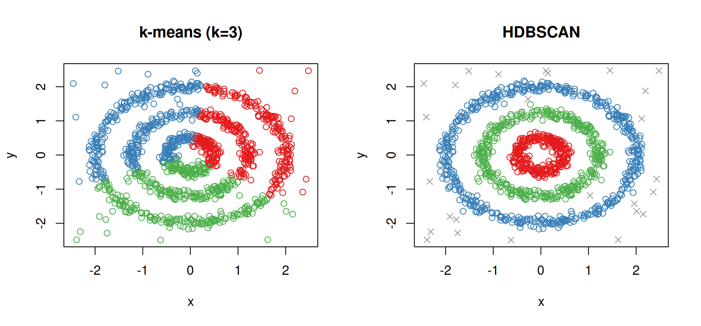
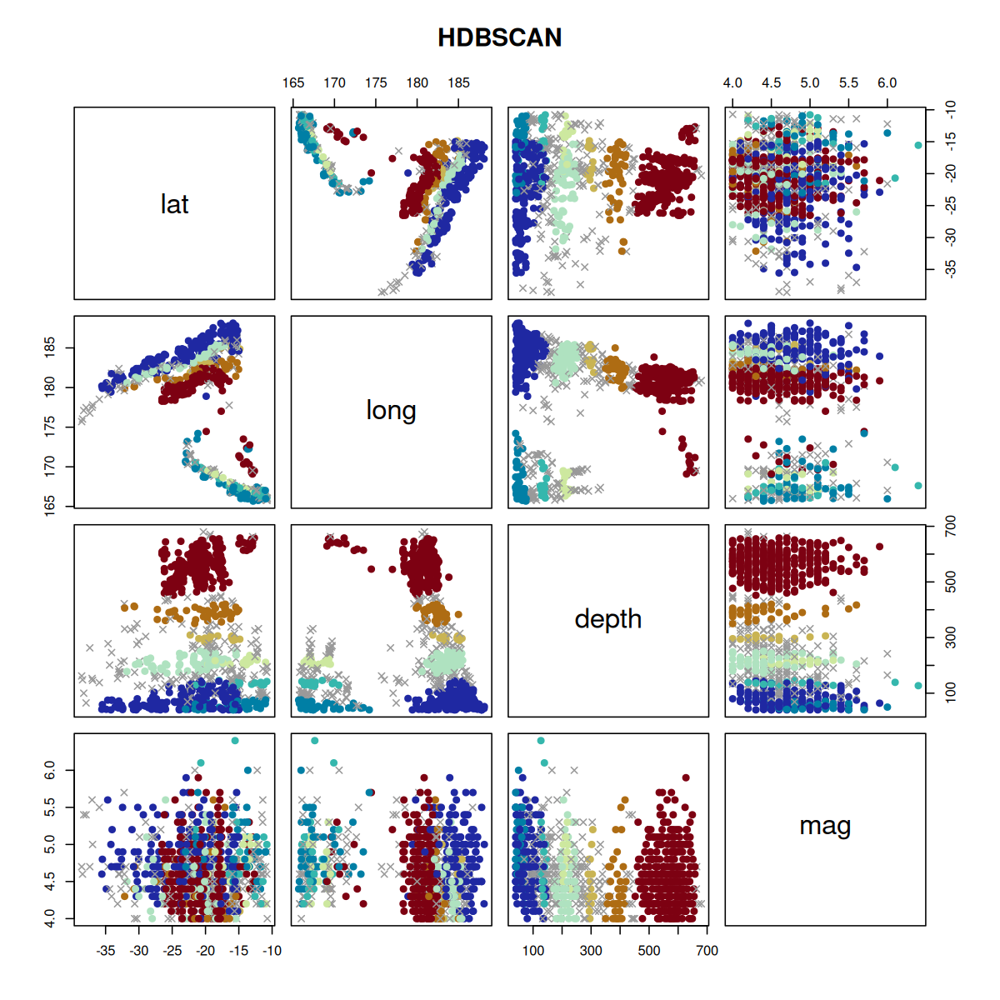

R bindings to the petal-clustering Rust library, providing fast density-based clustering via DBSCAN, HDBSCAN, and OPTICS.
Installation
# install.packages("pak")
pak::pak("belian-earth/petalcluster")Requires a working Rust toolchain (rustc >= 1.81).
Why density-based clustering?
Classical methods like k-means assume convex, evenly-sized clusters. Real data is rarely that clean. Density-based methods find clusters of arbitrary shape and naturally separate noise.
library(petalcluster)
# -- Cluster with both methods --
km <- kmeans(rings, centers = 3, nstart = 20)
hdb <- petal_hdbscan(rings, min_cluster_size = 15L, min_samples = 5L)
# -- Side-by-side comparison --
cluster_col <- function(labels) {
pal <- c("#E41A1C", "#377EB8", "#4DAF4A", "#984EA3")
cols <- rep("grey60", length(labels))
valid <- !is.na(labels) & labels > 0
cols[valid] <- pal[((labels[valid] - 1L) %% length(pal)) + 1L]
cols
}
cluster_pch <- function(labels) ifelse(is.na(labels), 4L, 1L)
par(mfrow = c(1, 2))
plot(rings, col = cluster_col(km$cluster), main = "k-means (k=3)")
plot(rings, col = cluster_col(hdb$cluster), pch = cluster_pch(hdb$cluster), main ="HDBSCAN")
Example
R’s built-in quakes dataset contains 1,000 seismic events near Fiji. HDBSCAN finds spatial clusters of earthquake activity without needing to specify the number of groups upfront.
quakes_hdbscan <- petal_hdbscan(
quakes[, c("lat", "long", "depth", "mag")]
)
quakes_hdbscan
#>
#> ── HDBSCAN Clustering
#> Metric: "euclidean"
#> Parameters: alpha = 1, min_samples = 15, min_cluster_size = 15
#> Clusters: 8, Noise points: 199Use xcol and ycol to plot a single pair of variables — here longitude vs latitude reveals the geographic structure of the clusters:
plot(quakes_hdbscan, xcol = "long", ycol = "lat", asp=1)
The default plot produces a scatter plot matrix of all variables:
plot(quakes_hdbscan)
Performance
petalcluster offers a performant alternative for density-based clustering in R, particularly at scale. The plot below compares wall-clock time against the dbscan R package and Python’s scikit-learn, across dataset sizes from 500 to 50,000 points.

Acknowledgements
The heavy lifting is done by the petal-clustering crate, developed and maintained by Petabi petalcluster is simply an R interface to their work.